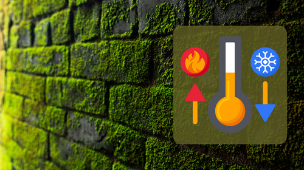
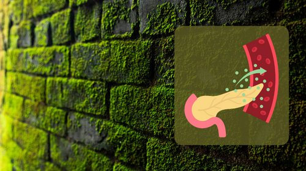
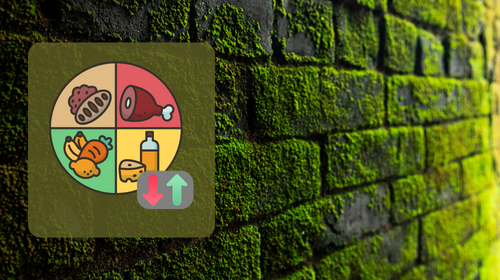
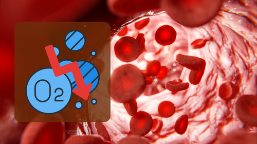
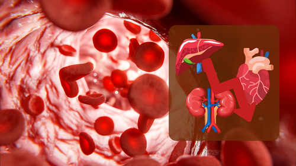
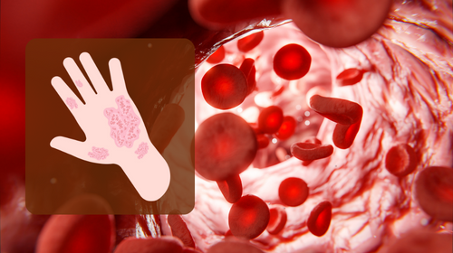

Gene editing is a molecular process that involves making precise changes to the DNA of an organism.
HOMEOSTASIS EXAMPLES

Thermal Homeostasis
Purpose: Maintaining a stable internal body
temperature.
Mechanisms: Involves processes like sweating,
shivering, and vasodilation or vasoconstriction of blood
vessels.
Blood Pressure Homeostasis
Purpose: Maintaining stable blood pressure within
arteries.
Mechanisms: Regulated by the cardiovascular system,
involving the heart, blood vessels, and hormonal control.

Blood Sugar Homeostasis
Purpose: Regulating glucose levels in the blood.
Mechanisms: Involves insulin and glucagon secretion
by the pancreas, as well as glucose uptake by cells.

Thermal Homeostasis
Purpose: Maintaining stable levels of essential
nutrients in the body.
Mechanisms: Controlled by factors like digestion,
absorption, and storage/release of nutrients.
Sickle Cell Disease (SCD) causes disruptions to homeostasis through various mechanisms. Here are four main ways in which SCD impacts the body's ability to maintain a stable internal environment:
SICKLE CELL DISEASE IMPACT ON OUR HOMEOSTASIS

Vaso-occlusive Crises
Normal Function: Blood vessels allow smooth flow.
SCD Impact: Sickled cells block vessels, causing
pain, tissue damage, and compromised blood flow.

Oxygen Transport Disruption
Normal Function: Hemoglobin carries oxygen
efficiently.
SCD Impact: Abnormal hemoglobin leads to rigid,
sickle-shaped cells, reducing oxygen delivery.

Impact on Organ Function
Normal Function: Organs receive adequate oxygen and
nutrients for proper function.
SCD Impact: Vaso-occlusive crises can result in
organ damage due to reduced blood flow and oxygen.

Hemolysis and Anemia
Normal Function: Red blood cells maintain balance.
SCD Impact: Fragile sickle cells break down
prematurely, causing anemia and disrupting oxygen transport.